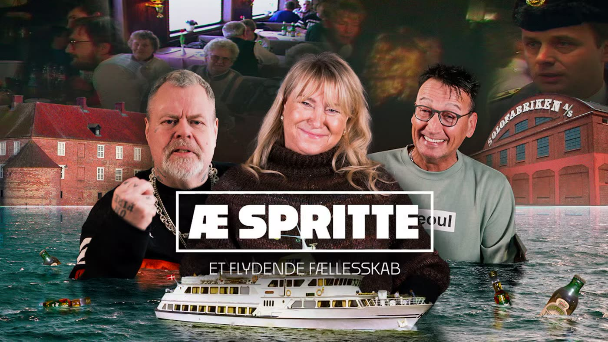
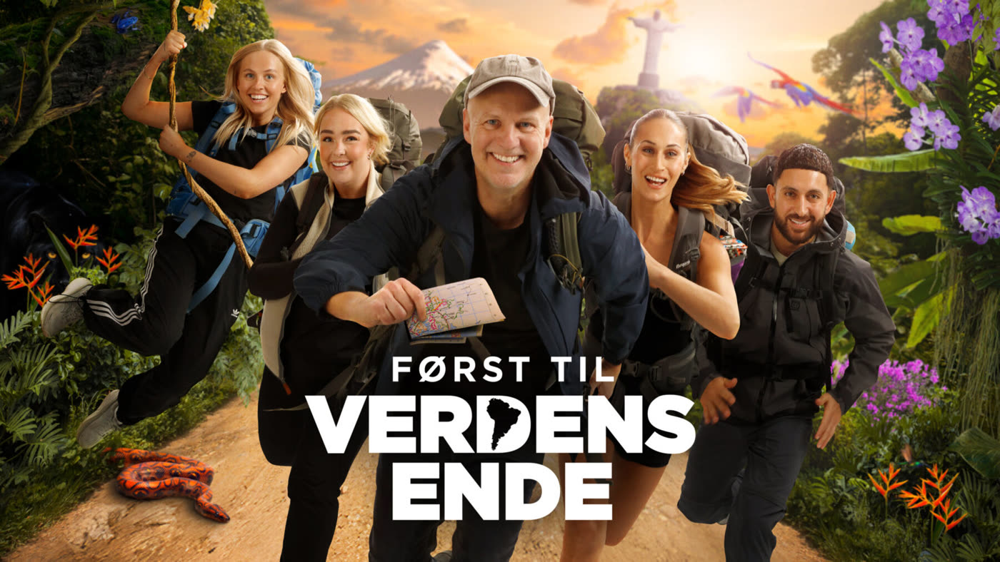
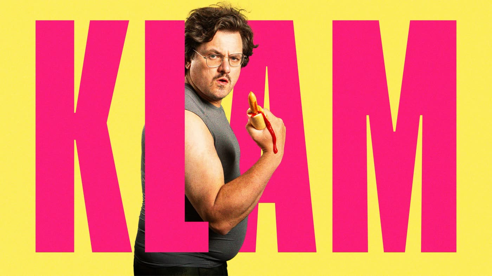
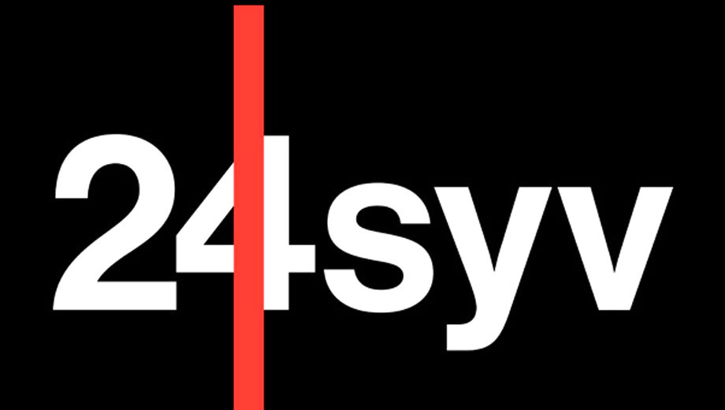

Tilrettelægger og videojournalist
Jeg er uddannet tv- og medietilrettelægger fra DMJX og laver indhold til tv, web og sociale medier, fra den første idé til det færdige klip.
Senest har jeg været posttilrettelægger på et stort underholdningsformat til TV 2. Før det var jeg DIT og dronefotograf på Først til verdens ende, og sammen med Tobias Lindhardt Jensen har jeg lavet dokumentarserien Æ Spritte – et flydende fællesskab, som blev sendt på TV Syd.
Under min tid på DR Ung udviklede og tilrettelagde jeg Klam, og på 24syv lavede jeg SoMe-indhold.
I dag arbejder jeg freelance gennem mit eget firma med tilrettelæggelse, kamera, droneoptagelser (A2-certifikat) og klip i Premiere Pro og After Effects. Skriv eller ring, hvis du har et projekt.
Jeg kan bl.a. hjælpe med
Titlen følger, når programmet er offentliggjort.
Dokumentarserien om spritbådene i Sønderjylland, sendt på TV Syd.

Jeg var med på turen som DIT og dronefotograf. Mine dronebilleder kan især ses i afsnit 4.

Projektet jeg udviklede, tilrettelagde og filmede på under min tid på DR Ung.

Jeg har klippet en række SoMe-videoer for Forlaget Cobolt ud fra materiale, de på forhånd havde filmet med forlagets forfattere. Videoerne blev lavet både i short form og i længere versioner til YouTube.
Udvalgt SoMe-indhold fra min tid på 24syv. Meget er desværre slettet efter lukningen af radioen.
